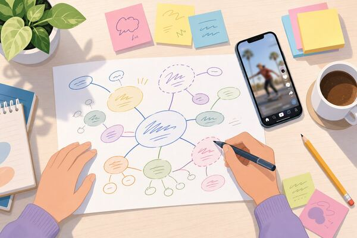
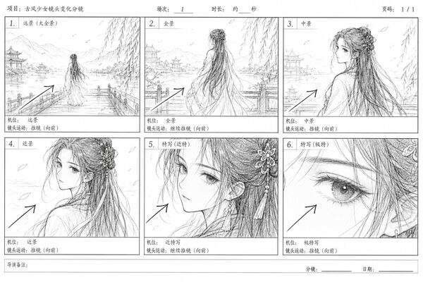
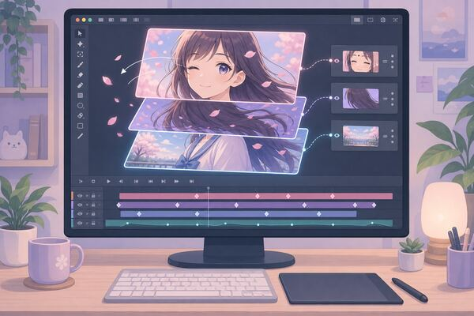
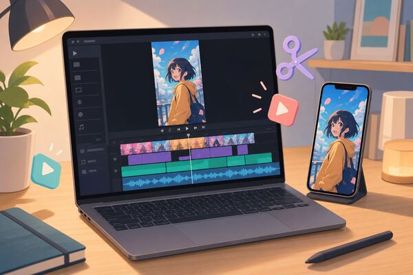

01纯前端演示 · 提示词在本地拼装，不上传任何内容
一句话，开拍你的下一部短剧
写下创意，选好题材、画幅和时长，这里帮你拼出一段可以直接粘贴给豆包的完整提示词。
制作流程
8 个环节，从一句话创意到发布上线。先把剧本和分镜做扎实，再做画面。
作品精选
示例数据，配图是 AI 生成的插画和本仓库的教程配图。点开可预览推、拉、摇镜头的动态效果。
没有找到相关作品
换个关键词，或者清除筛选条件再试试。
纯前端演示 · 提示词在本地拼装，不上传任何内容
写下创意，选好题材、画幅和时长，这里帮你拼出一段可以直接粘贴给豆包的完整提示词。
8 个环节，从一句话创意到发布上线。先把剧本和分镜做扎实，再做画面。

01
03
06
07示例数据，配图是 AI 生成的插画和本仓库的教程配图。点开可预览推、拉、摇镜头的动态效果。
没有找到相关作品
换个关键词，或者清除筛选条件再试试。